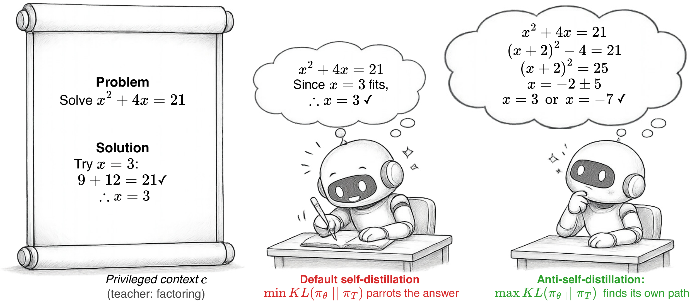

Anti-Self-Distillation for Reasoning RL
via Pointwise Mutual Information
Reverse the sign. Reach a strong GRPO baseline in 2–10× fewer steps, with up to +11.5 points of final accuracy.
✉ Corresponding authors:
yuanshan2@xiaohongshu.com,
floyed_shen@outlook.com
 #1 Paper of the Day on Hugging Face
#1 Paper of the Day on Hugging Face
The diagnosis. Default self-distillation's per-token reward is conditional pointwise mutual information — it rewards shortcut tokens the verified solution already implies and penalizes the deliberation tokens (Wait, Let, Maybe) that drive multi-step search.
The fix. AntiSD ascends a bounded Jensen–Shannon divergence between student and teacher instead of descending reverse KL — flipping the per-token sign at the source — with a single auto-calibrated entropy-triggered gate. A drop-in replacement, no extra cost.
The result. Across five 4B–30B models (dense + MoE) on math & code reasoning, AntiSD beats GRPO on every model and stacks on top of saturated GRPO checkpoints.

An oracle-conditioned teacher biases the student toward a single solution root; reversing the signal preserves deliberation and recovers the rest of the search tree.